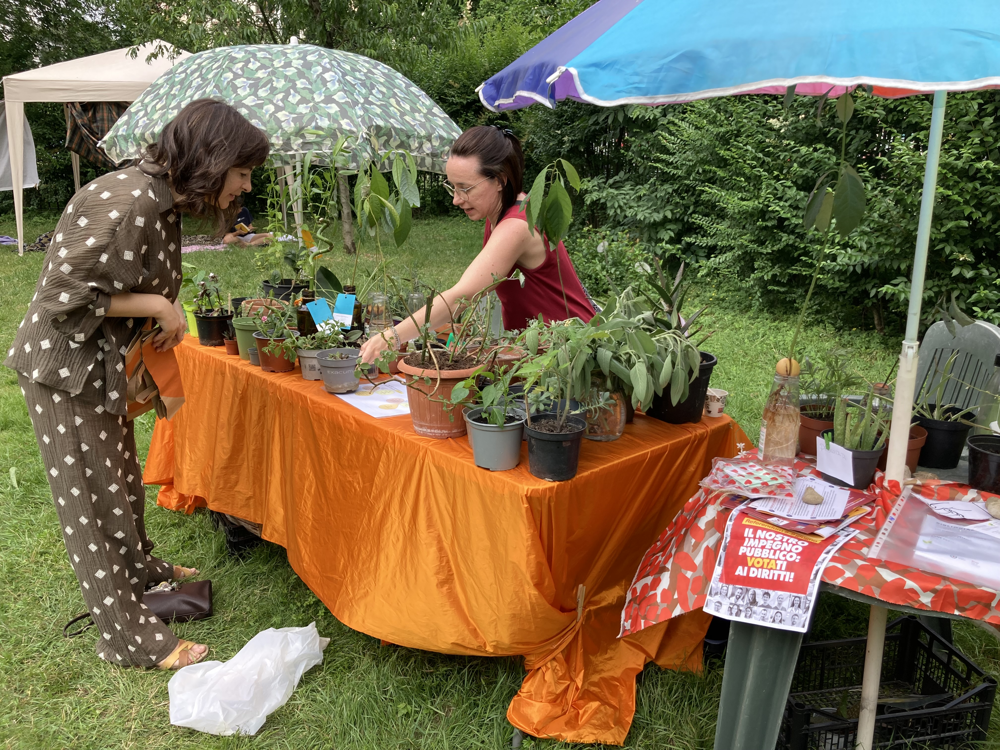

🌼 Scambio piante, pic-nic e giochi
21 marzo 2026
Bibliofesta di primavera
Una mattina tra talee, semi, piante, picnic e chiacchiere. Il giardino si è riempito di colori e di persone curiose di scambiarsi qualcosa e conoscersi un po’ meglio.